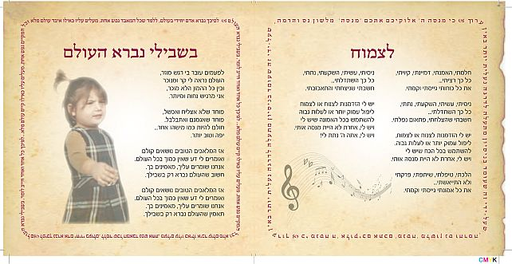

Giving Women Their Voice – A Unique Shlichus
“The shlichus assigned to us all is kabbalas p’nei Moshiach. However, when a person discovers his personal mission within the collective mission, and realizes it, it has an element of a personal Geula which is very satisfying. * Zipi Kolteniuk, a Lubavitcher singer and composer who performs in Eretz Yisroel and abroad, shares her story about how she discovered her life’s mission, what tragedy caused her to avoid the piano, and how an unsuccessful transition imposed by life circumstances turned into the springboard of her life’s mission.

“We hosted neighbors who are not yet observant. The atmosphere was pleasant and at a certain point, the woman raised her cup for l’chaim and said, ‘I sometimes hear you singing with your kids. You sing so nicely. I wish for you that this year you use all your blessed talents which G-d gave you.’ I’m not sure whether she understood or knew the power in what she said.
“But what she said changed something within me. I felt that it was a message from heaven. I suddenly realized that I had to start using my talents. It was the impetus that led me to the place I am in today.”
Today, Zipi is a singer and performing artist who has appeared on countless stages in Eretz Yisroel and abroad and has been written up quite a bit. The articles have been admiring, whether in the religious media or that which is far from it.
I admit that as someone who loves music and who needs to hear it all the time (playing in the background), I have often wondered why Hashem gifts women with musical talent without them really having the means to express it.
True, there are women who sing for other women and that’s nice and important, but most of them worked in the field before they became religious. But a religious-from-birth singer and composer? One who writes and composes original songs and travels with her own show? That is rare in our world.
One of the first to break through in the field is Zipi who combines her prodigious talent with a sense of shlichus. For three years now, she has been traveling the country and the world with her own musical show called, “The World was Created for You.” It is a performance that presents her fascinating life story accompanied by original song.
The emphasis is on originality, songs that she wrote and composed herself. If you ask her to sing songs that are not hers, you will probably be politely turned down.
“Creativity comes from a very deep place,” she explains. “The words also have great meaning and an important message for the audience; I feel this is my shlichus in the world.”
The purpose of the performance is to inspire women and girls to believe in their ability to express themselves, each with the talents and abilities Hashem gave her.
BIRTH OF A SONG
How is a song created? I am curious to know.
“Some people sit down at the piano and compose a song. It doesn’t work that way with me. It usually comes on its own, from inside. I can’t just sit down and compose. With me, a song is born due to things I experienced, things that I went through. You need to be a very inward person and experience things deeply in order for something to be created within you, with words and a tune.
“Most of the time I can accurately determine a song which was written with external inspiration, by sitting down at the piano and having decided to compose a song, and a song which was born from inside, from the depths of the heart and neshama. It’s something else entirely.
“Interestingly, most of my songs were composed when I was on maternity leave, and not coincidentally. Birth is a time of powerful connection to the core self, when senses are heightened and insights gain clarity, and that inspires creativity.”
I asked Zipi how it all began.
“It began in a happy, musical Lubavitcher home with a father who is a scientist and a mother who was a gifted pianist and performed at big concerts in Russia. She encouraged us girls to study piano from a young age.
“As a girl, I remember waiting for the Shabbasos when my brothers came home from yeshiva and we would sit for hours at the Shabbos table and sing, mainly Chabad niggunim. Sometimes, my brothers would bring home a new niggun that they learned and then it was very joyous. There’s no question that this had an enormous influence on my creativity today. My foundation is classical music but with Chassidic motifs.”
However, the first seeds that were planted at a young age only began to sprout and grow after a personal tragedy in which Zipi lost her mother. Zipi was only ten and a half when she had to deal with the huge loss.
“My mother died within two months of being diagnosed with the disease, leaving us in shock. The sorrow, pain, and feeling of emptiness caused me to drop my piano playing and to close myself off in my pain.
“Four years passed and my father remarried. We moved, some of my brothers and sisters married or went to learn in yeshivos far from home and I was in an unfamiliar home, sad and alone, finding it hard to handle all the upheavals in my life. The only familiar thing which reminded me of my mother’s home was the beloved piano which connected me to my mother and became my best friend. I spent hours after school playing, writing and composing. Still, this was only a hobby and my professional involvement with music only happened many years later.
“The roots of our family are planted deep in Chabad. My great-grandfather was a descendant of the famous chassid, R’ Meir Simcha Chein from the Chassidic town of Nevel. But due to the upheavals of life in Soviet Russia, my parents were given a Russian education which included culture and academia and they were distanced somewhat from the Chassidic way of life. It was only after moving to Eretz Yisroel in the 70’s that they slowly moved back to their roots so that I was born and raised in a Chassidic home that was open and inviting to anyone in need.
“Boruch Hashem, the family I grew up in, the Krichevsky family, was blessed with many children. I am the eighth out of eleven. My parents’ home was a warm, happy place where music always played in the background. As kids, we loved to be at home, playing, making music, singing together. The house was always full of guests, mainly new immigrants from Russia who came en masse in the 90’s and had to contend with the difficulties of a new land. My mother found it hard to see academicians being forced to become janitors and she came to their aid. She opened an office and helped them tremendously in finding work, a place to live and with other aspects of their absorption.
“At first it was done independently and then she was paid by organizations that dealt with immigrants. I remember people coming as guests who ended up staying, sometimes for a month and more, until they were able to settle down. Sometimes I discovered that a garment of mine was missing from the closet. It was because my mother gave it to one of the girls staying with us.”
FROM SHLICHUS, TO SHLICHUS ON STAGE
“After I married, I went on shlichus to Moscow. My husband taught in yeshiva and I gave classes to women. We were very satisfied and happy on shlichus and thought we’d continue in this way until Moshiach comes, but Hashem had other plans. After two years we had to return to Eretz Yisroel because my husband had a medical problem and the best treatment for it was in Eretz Yisroel. We packed and left.
“At first it was very hard and we felt at loose ends. I worked in a store, mainly because of the convenient hours, so I would be available for my children in the afternoon. When they returned from school it was important to me that I be there to give them my attention. At the same time, I was constantly taking courses that gave me practical tools to be a better mother, but I soon realized that my working as a sales clerk was not my destiny in life. I felt frustrated and dissatisfied.
“I always loved and knew how to write and I went to work for Yad L’Achim where I mainly worked writing the messages and stories of the organization. This area of my life slowly developed but my professional involvement in music, along with the big breakthrough, came only years later.
“Today I realize it was divine providence that led me from Moscow to Eretz Yisroel, to my life’s work. I realized that Hashem had designated a far greater shlichus for me. With the shlichus in Moscow, I affected a few dozen, maybe hundreds of women, while today, through music and my performances, I reach thousands of women from all sectors and in all kinds of places in the world. I constantly receive feedback from women, from all walks of life, who tell me how my songs affected them and how they made positive changes. This moves me every time I hear it.”
How did the change occur?
“It was a long process in which various things happened that pushed me in this direction. At first I did not even consider singing myself, so I tried selling my compositions to other singers. There was one producer, not yet religious, who said, ‘You are so talented; why don’t you sing yourself?’ He was willing to invest in a CD of mine, but I have red lines and I wouldn’t do anything against halacha.
“At that time, I recorded my songs on CD’s (this was before the era of WhatsApp) and sent them to my sisters and friends. They garnered a lot of enthusiastic and supportive feedback. It began to dawn on me that I need to sing my own songs but I wanted to go about it in the right way.
“I spoke to a friend, a shlucha in Ganei Yochanan, and offered to sing Chabad niggunim at an evening for women that she was organizing. She agreed and that is how I got started.
“That evening an artist who works with sugar crafts spoke about her path to success that did not come by itself. From her story I understood that you need to work in order to achieve results; I suddenly got it, that if I want to move forward, I need to make things happen.
“It is very important to me that women understand that in order for their dreams to come true, they need to get up and do something. Things don’t happen on their own. For years I sat and waited to be discovered, which didn’t happen. It was only when I started doing things, that I merited a lot of heavenly assistance. I saw that when a person chooses to go on the right path, heaven helps him. There were days that I felt that Hashem was leading me by the hand.
“By divine providence, shortly after that first performance, I came across an ad for a course for small business owners. At first I wasn’t eligible to join the course initiated by the Rechovot municipality, but then things worked out and I ended up taking the course for free! I got the professional tools and the push and faith in my abilities to translate my talents into a profitable business.
“The same thing happened when I decided to study music in a formal way. At that time, I was unable to pay thousands of shekels for classes, but I didn’t give up. I called the music school in Rechovot and told them that I really wanted to study music but I can’t pay for it. Since I was involved in marketing at the time, I offered them my marketing services in exchange for classes. It turns out, they were looking for someone to market them and we closed our deal. Once again I saw that when a person wants something and takes action, heaven helps.
“When I decided to produce my own CD two years ago, I again saw the hand of Hashem. The original plan was to record in a friend’s home studio, but at the time we arranged to start recording, they began renovations in her building and it was impossible to record because of the noise. I realized that Hashem wanted me to go to a more professional studio. I spoke to one of the biggest producers in the field, who worked with top of the line singers, and although it cost me a fortune, it was worth it.
“Boruch Hashem, the CD was a big success. The first two runs sold out and I’ve already produced a third edition. It’s interesting that it has also been very successful in Russia and many women love it even though they don’t understand the words. It seems music is a language that speaks directly to the soul.”
ACTION IS THE MAIN THING
I asked Zipi how she combines a demanding career and running a Chassidishe home. She said:
“Despite my many involvements, to me, motherhood comes first. The family is the most important thing to me in the world.
“This past year, I performed ten times in Russia-Ukraine, in Siberia, Omsk, Kiev, etc. but I have an ironclad rule that is based on what is best for the family, which is I do not fly more than once a month. I also try to make the trip as short as possible. There were times that I left in the morning and flew back at night so as to be away from home as little as possible.”
GEULA MESSAGE
I asked how the Geula comes up in her performances. She said:
“I composed a song called ‘Every Day is a Diamond,’ in which I talk about the importance of using every moment, to live in the present without being stuck in the past. After playing and singing it I say to the audience, which is not just Chabad – ‘The Rebbe taught us to anticipate the Geula and speak about it and to plead, “Ad Masai?” while simultaneously opening our eyes to see and live the Geula.’
“The truth is that the concert itself is Geula. I feel that there is a tremendous thirst to hear, to learn Chassidus, and to grasp the belief that the world is moving toward a better future. I’ve performed in Russia several times and hearing women of all backgrounds singing along with me, ‘I have a G-dly soul within me,’ is living Geula! We feel that the Geula is on the threshold. I don’t know whether I could have done this performance in Russia a decade ago.”
FUTURE PLANS
“I am working on a new CD. Thanks to a broad base of support from the public, we decided to produce the CD through a crowdfunding pitch (headstart.co.il – a crowdfunding site for artistic endeavors). I’m talking about tens of thousands of shekels, so that, boruch Hashem, I have the financial wherewithal and the peace of mind to concentrate on the second CD.
“The first CD was entirely inspired by the Alter Rebbe and dealt more with concepts from Tanya in understanding the characteristics and construct of the soul and the way to deal with difficulties and problems in life. The new CD is more inspired by the Rebbe and the messages it contains deal more with actual action, for action is the main thing; what is your contribution to the world, what are you doing so that the world becomes a better place.
“My connection with the Rebbe grew stronger after I started performing. The connection was always there. I grew up in a home which lived and breathed the Rebbe, and proclaiming ‘Yechi’ was something my mother always did (in general, my mother was very connected and tried to go to the Rebbe at least twice a year). But only after I started performing did my connection with the Rebbe acquire a deeper dimension.
“Since it isn’t easy for me to stand on stage because by nature I am more the type to be behind the scenes, I felt that I need to get inspiration and strength from the Rebbe. So I write to the Rebbe, more and more, I learn the sichos more, and as a result I began feeling a special, personal bond.
“May we merit to see him soon and sing a new song to Hashem!”
Beis Moshiach (staff). "Giving Women Their Voice – A Unique Shlichus." Beis Moshiach, no. 1034 (August 15, 2016).